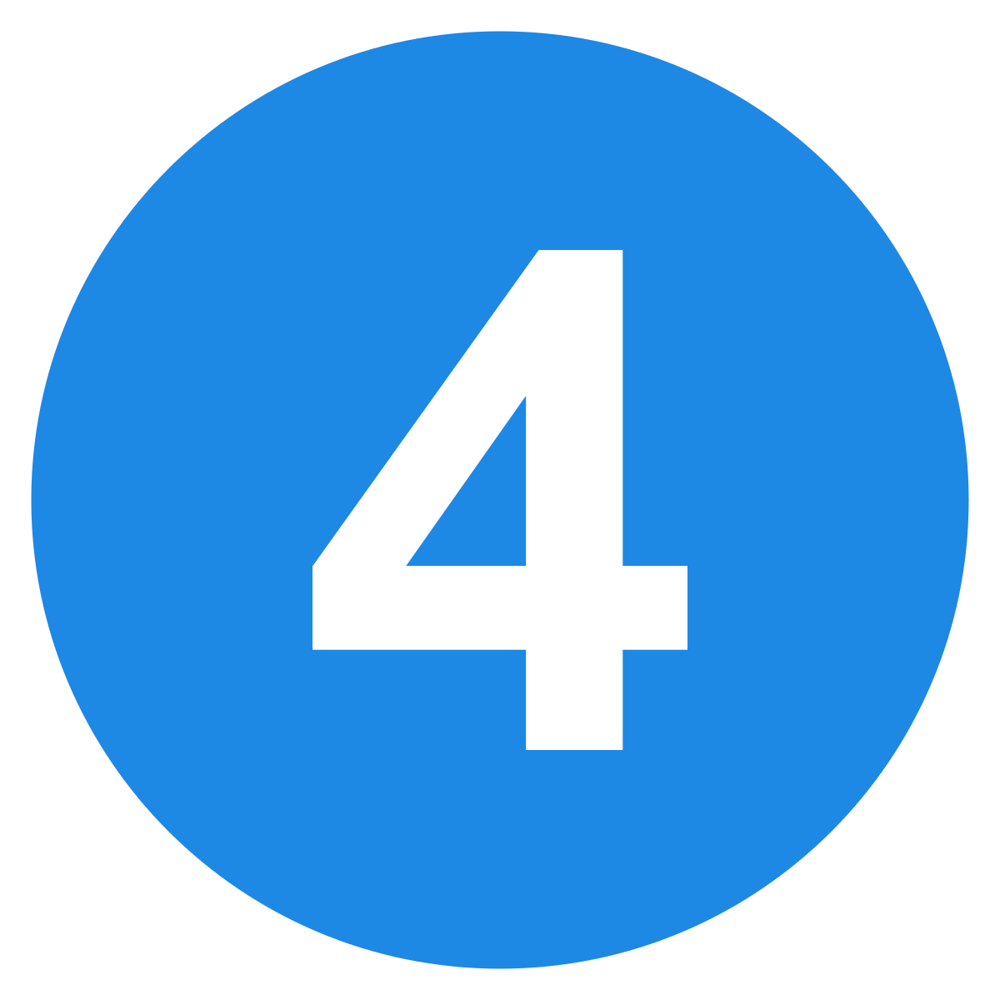
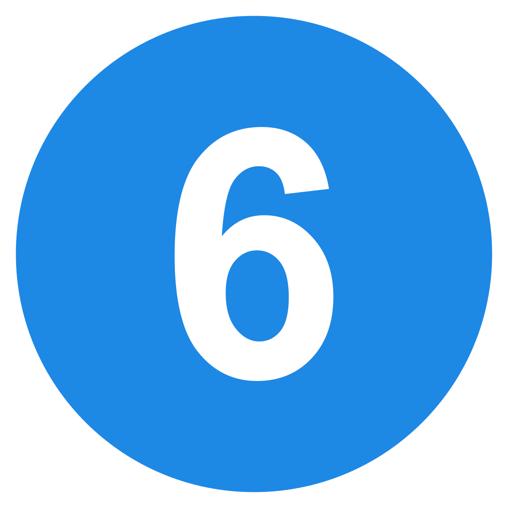

MY EDUCATIONAL BACKGROUND
Education is the key of life
Pre Primary Level
I studied my pre school education at Chuma Primary school during 2007
See More..!
Primary Level
I also studied my primary education at Chuma Primary school from 2008 - 2014
See More..!
Secondary o-Level
I studied my ordinary level education at Usagara secondary school from 2015 - 2018, found around Usagara Areas
See More..!

Secondary A-Level
I studied my advanced level education at Korogwe Teachers' College from 2019 - 2021.
See More..!
Diploma Level
I studied my Diploma level of education at Korogwe Teachers' College from 2021 - 2022. Where i was awarded a Diploma Certificate in teaching Secondary Education
See More..!

University Level
I started University level of education in 2022 at Mzumbe university found in Morogoro district. Right now, i am still a student at Mzumbe University
See More..!